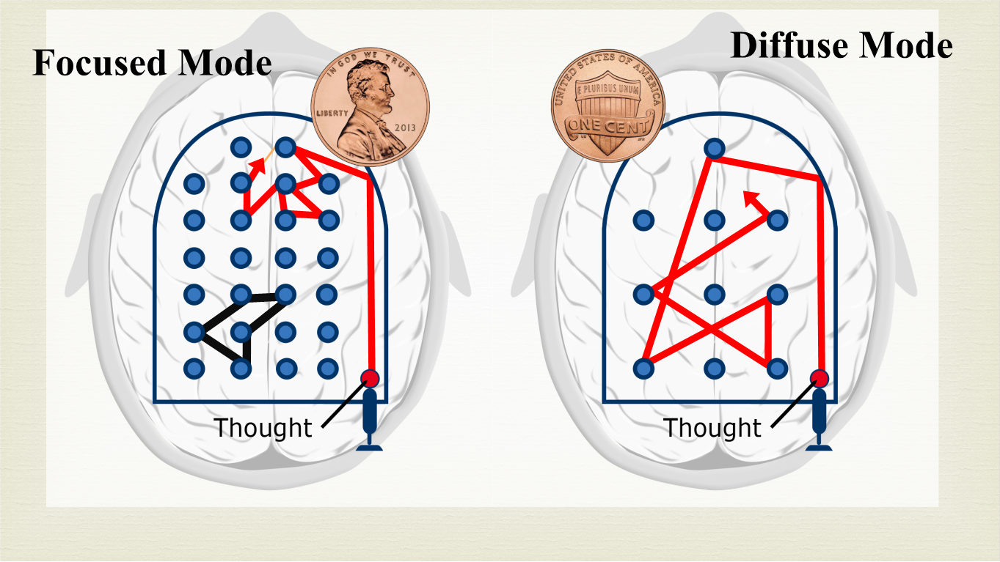
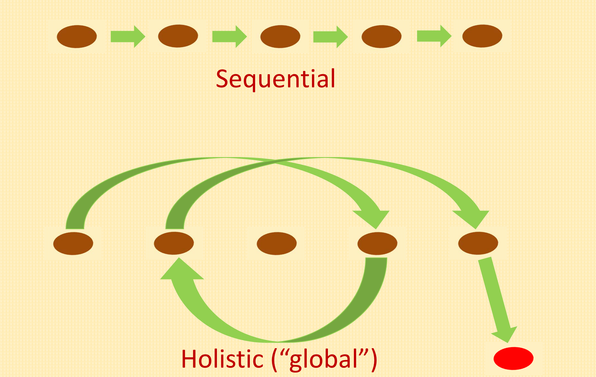
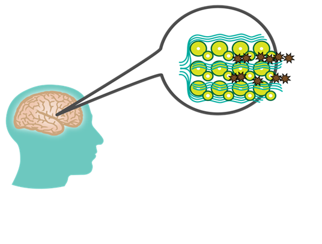
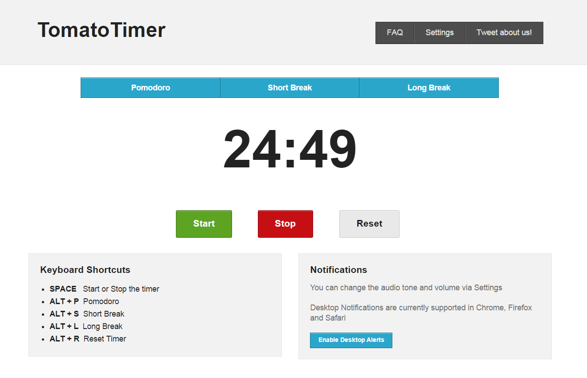
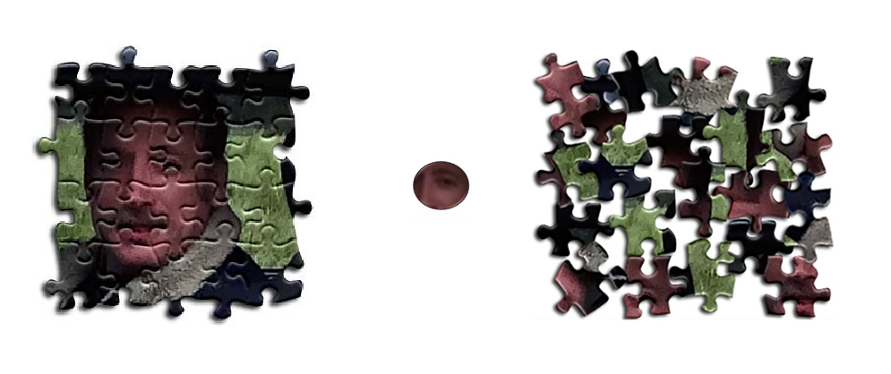
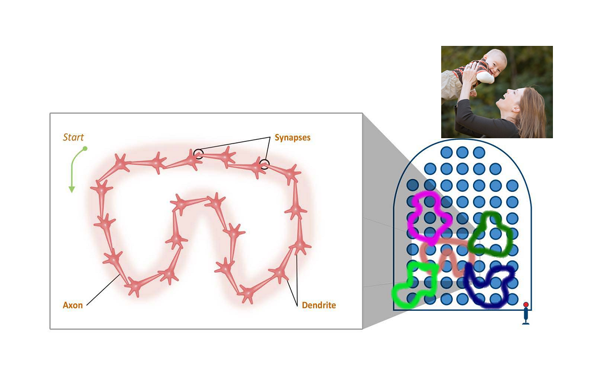
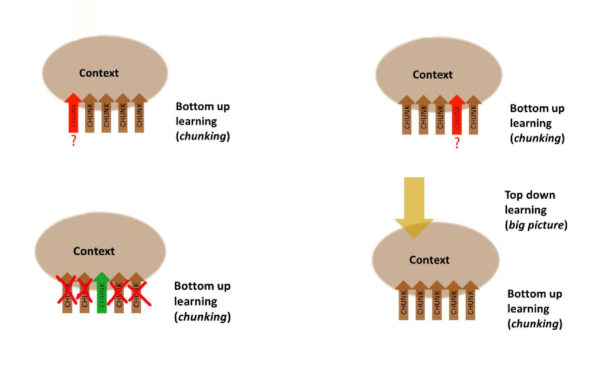
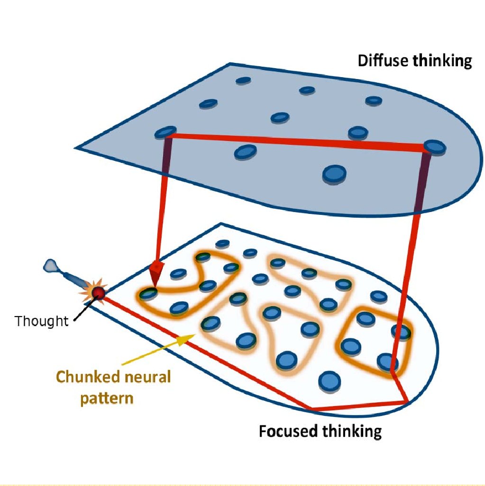
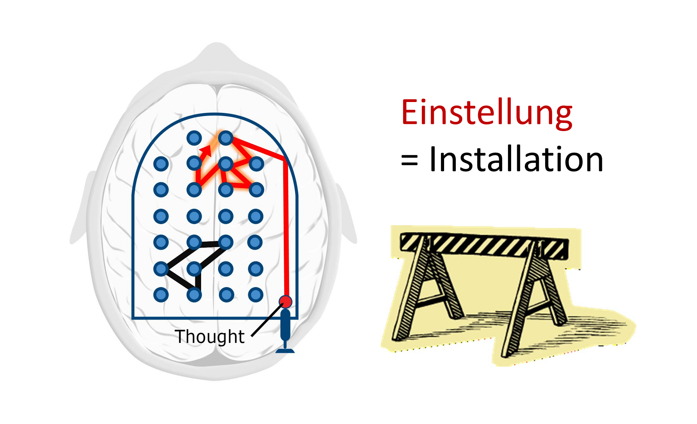

本博客已经迁移到新域名 linghao.io。请前往新博客阅读本文：https://linghao.io/posts/notes-learning-how-to-learn/。
Introduction
这是 UCSD 开设在 Coursera 上的课程 Learning How to Learn 的课程笔记。这门课程主要基于神经科学和认知心理学的一些研究成果讲述高效学习的理论和技巧，涉及了大脑的记忆机制、拖延的成因和应对方式，以及许多关于学习抽象复杂知识的小技巧。
由于时间有限，我只看了视频和通过了所有的 Quiz，Optional Assignment 和参考文献里的内容需要花费数倍的时间去仔细研究。尽管如此我依然感觉获益匪浅，故决定将笔记公开造福大家。
文中几乎所有的观点都是来自于授课材料，我尽量少做二度演绎。这些观点全部有详实的研究作为支撑，相信大家读了以后也能感受到，其中不少内容我们在日常学习中已经深有体会了。
本文采用署名 - 非商业性使用 - 禁止演绎 3.0 中国大陆许可协议进行许可。
Thinking Modes
Focused Mode 和 Diffuse Mode 是两种不同的思考状态。对于 Focused Mode 你一定不陌生，当集中精力解决一道数学题时，大脑就是处于 Focused Mode。而 Diffuse Mode 指的是一种放松的思考模式。你可以借助下面这幅 Pinball 的示意图来更好地理解这两个概念。

在左边对应的 Focused Mode 中，思绪很快集中于几个临近的神经元组成的神经回路。而在右边对应的 Diffuse Mode 中，可以看到思绪在随性地跳跃。
要随时牢记，Focused Mode 适合用于解决已经熟练掌握的内容，比如计算个位数乘法；而 Diffuse Mode 则对于新事物的学习至关重要，比如学习一门新的语言。这两种模式也分别对应了两种不同的思维模式：顺序思考（Sequential Thinking）和整体思考（Holistic Thinking）。

要注意在解决问题时，整体思考所获得的灵感必须经由顺序思考来确认其正确性。所以说在理想的学习模式中，你要能够在这两种模式中自如地切换，从而更好地掌握新知识。
Memories
Working Memory and Long-term Memory
Working Memory 就好比计算机的内存，是指大脑用于处理当下的任务的那部分记忆。Working Memory 的大小因人而异，内存比较小的人在学习抽象和复杂的概念时可能就会遇到困难。也就是我们常说的学到后面忘了前面。这种情况的应对办法，一是 Chunking（之后会介绍），二是通过比喻和类推等手段来改变知识的表示。这是因为不同的人思维方式不同，所以他们对知识的不同表示的接受度也就不同，一个表示可能对 A 来说正好能 fit 进他的 Working Memory 中，而对 B 来说却是 overload 了。
Working Memory，或者说是短期记忆（Short-term Memory），最终要成为长期记忆（Long-term Memory）才能在日后为你所用。有一些技巧可以帮助你形成更牢固的长期记忆。
Practice and Repetition
我们要正确地看待练习和重复在学习中的作用。只有通过反复的练习才能搭建足够牢固的神经回路。尤其是当学习的概念比较抽象时，练习不足就会导致形成的神经回路十分薄弱。但盲目的反复练习可能效率不高，甚至还对学习有负面影响。这一点在下面会多次提到。
合理的练习应该是不断增大两次反复之间的间隙，也即间歇性重复（Spaced Repetition）。研究表明同样次数的练习，分散在好几天中做的结果要比集中在一个晚上做更好。其实各种所谓的记忆曲线也就是这个道理。
Memory Tricks
- 研究表明，用笔写下来过的东西的确更容易记住。
- 研究表明，图像可以直接唤醒右脑的 Visual Spatial Centers。也就是说图像可以帮助你更好地封装概念和知识，从而形成更多和更加牢固的神经回路，日后就更容易回想起来。事实上其他的感觉也可以起到相似的作用，但对于人类来说视觉的地位是最重要的。
- 睡眠对于学习是非常重要。首先，入睡时脑细胞会缩小使得代谢毒物得以被清除；更重要的是，睡眠是学习和记忆机制的重要组成部分。在睡眠时大脑会自动清理不重要的记忆、巩固你正在学习的内容，并在潜意识中排演其中困难的部分。要利用大脑的这些机制，在睡前花上 5 分钟回顾今天学过的内容是一个不错的选择。

Pomodoro
Pomodoro 是一个定时提醒器，它将每个 30 分钟的区间划分成 25 分钟的专注学习时间和 5 分钟的休息时间。使用 Pomodoro 的核心在于，尽最大可能在每个 25 分钟的区间内都保持专注和高效，而不去过多考虑什么时候能完成既定的目标。而在 5 分钟的休息时间里，你的大脑可以进入 Diffuse Mode 来帮助你理解和概念化所学的内容。

想尝试这类工具的话可以戳这里。
Chunking
在刚开始学习一个新概念时，大量的信息涌入，认知负载（Cognitive Load）很重，使你无法很好的把握。大脑需要一个过程来理解和消化这些内容并将它们组合到一起，这个过程就是 Chunking。这就好比将拼图的碎片拼接起来的过程。如果你只是被动地接收知识而没有把它们 Chunk 起来，这些知识就好比下图中间那块没有锯齿边的拼图块。它无法与其他知识相关联，也就无法为你所用。

神经科学认为 Chunk 的本质是由于意义联系或反复使用而形成的神经回路，而通路中的神经元往往被同时激活，使得你在回忆一个概念或是执行一项操作时能够顺利高效。良好的 Chunking 能够使你更容易地回想起所学的内容，更有助于将已经学习的部分嵌入到更大的框架之中。（从这个意义上讲，Chunking 带来的好处就好比是 Modularity 在软件工程中带来的好处。）
从 Working Memory 的角度来讲，一个良好的 Chunk 只占用一份空间，只需要很少一部分注意力就可以激活整个 Chunk 的神经回路。而没有经过 Chunking 的等量信息则会占用多得多的空间。
在母语习得的过程中，当母亲教孩子说“mama”，在孩子的大脑中连接“mama”这个词的声音和母亲的相貌的神经回路就会不断牢固。

练习和重复对于 Chunking 来说非常重要。但除此以外还有一些其他的技巧可以有助于这个过程。
- Divide and Conquer：如果一个 Chunk 对你来说太大了，就把它们拆分然后各个击破。比如在学习演奏乐器的时候，我们往往会一小段一小段地进行练习提高熟练度。
- Workout Roadmap：在学习理科时书本上往往会有带解答的例题。它们的意义就在于让你在接受新概念时试着理清解答的思路来作为 Chunking 的第一步。但要注意，不要过分纠结于单个步骤，而是去关注步骤之间的联系。
Formation of Chunks
- 把注意力集中在你所面对的信息上。尽量不要让无关的事情占用你的 Working Memory。
- 试图理解所学内容的主旨。不追求深度的话这一点往往不是特别困难。只有在理解的前提下，大脑才能将新形成的神经回路与其他的神经回路进行联系，否则形成的 Chunk 就是无用的。但要注意，即使你理解了，也不一定意味着 Chunking 就成功了。举例来说，我们经常会遇到在上课时听老师讲解听懂了之后却又遗忘的情况。这是因为根据内容的困难程度和理解主动性的不同，形成的神经回路牢固度也会不同。自己琢磨明白的知识往往会来的更牢固一点，而对于从他人那里接受到的知识还是要及时复习，否则等完全遗忘之后重新形成 Chunk 就又非常费劲。
- 稍稍扩大思考的范围，来了解 Chunk 对应的Context。如图所示，练习和反复可以帮助自下往上的学习，而了解所学领域的 Big Picture 则是一种自顶向下的学习。这两者的重合点就是 Context。有了 Context 你才能够知道在什么时候该使用哪个 Chunk。

Recall
在复习时我们通常会重新翻看所学的内容（Rereading），或是试图整理概念之间的关系（Concept Maps）。然而研究表明，这些方法的效率都远远不如回想（Recall）。神经科学认为检索知识的过程本身就有助于加固对其的掌握。
不过要注意，Concept Maps 其实不是一种特别糟的方法，但问题是在熟练掌握多个概念之前就试图整理它们之间的关系是很低效的。而 Rereading 如果以间歇性重复的方式进行，也不失为一种好的学习方式。
把这个技巧更进一步的是费曼技巧（The Feynman Technique）。简单来说在费曼技巧中不仅要回忆自己所学的内容，还要设法用一句话把每个概念解释清楚。这对我们提出了更高的要求，也有利于达到更深的理解层次。
另一个有助于学习（尤其是考试）的方式是尝试在与平时学习不同的环境下做回想练习。因为大脑总是会注意到环境中的潜意识线索（Subliminal Cues）。所以在不同的环境下考试时大脑的运转会受到一些限制。如果平时经常在其他环境下回想，大脑就能“免疫”这些因素的影响了。
Illusion of Competence
正如前面所提到的，上课听老师讲解或是翻看习题的答案从而觉得自己理解了，是一种很常见的能力错觉（Illusion of Competence）。另一个常见的错误是用划线和高亮的方式在课本上标注重点。研究表明，如果你要采用这种做法，那就需要特别谨慎。因为这很容易让你产生自己已经掌握了重点部分的错觉。不过在纸边写上自己对重点内容的理解和补充却是一种好方法。
另一种形式的能力错觉是当你对着书本或是 Google 学习时你会觉得这些内容已经在你的脑子里了。为了应对能力错觉，你需要不断给自己小测试。其实回想就一种自我测试。
在自我测试的时候难免会产生错误，而这些错误是非常有价值的。你能通过错误知道自己薄弱的地方，并在下一次有意地不再重复同样的错误。
Transfer
Chunking 不仅有助于掌握特定的知识，还有助于将来学习其他领域的知识。这是因为 Chunk 之间可以互相联系。这种现象叫做迁移（Transfer）。
一个人如果掌握许多 Chunk，就好比他的大脑里面储存了许多有用的神经回路。这样在遇到新问题时他就有很大概率能够直接调出正确的解决方案。在这里 Diffuse Mode 起了很大的作用。

Overlearning
过度学习（Overlearning）指定是在已经掌握所学的内容后继续重复练习的行为。在某些情况下适当的过度学习是有好处的。想象练习网球的发球或是在公众面前演讲，过度学习使你不会在比赛时发球失误或是在台上说不出话来。
但在其他情况下，研究已经表明，过度学习是一种时间的浪费。更严重的是，因为重复练习自己已经掌握的内容是相对容易的，所以这有可能导致能力错觉的产生。正确的做法是在困难和重要的内容上适当地过度学习。
Einstellung
定势（Einstellung）指的是事先存在的思维模式阻碍了更新更好的想法的出现。

很多时候我们对于事物的第一感觉是错的。Diffuse Mode 是克服这种问题的最好帮手。
Interleaving
如前文所说，学习一门新学科要求我们能够知道在什么时候用什么 Chunk。锻炼这种能力的最好方式就是不断地在需要不同策略和技巧来解决的问题之间来回反复。这就叫交错（Interleaving）。在实践中，有意地挑选不同类型的习题来做就是一种很好的方式。
交错对于创造力和灵活性的培养是至关重要的。当然，涉猎多门与精通一门往往是对立的，所以这里就取决于个人的取舍。曾经有学者调查发现，科学界的重大突破往往是由年轻人或是来自其他领域的人做出的。这是因为他们不容易被定势所禁锢。
交错与前文提到的间歇性重复这两个技巧可以完美地搭配在一起。
Procrastination
每个人都有不同程度的拖延症。拖延会严重影响学习，因为临时抱佛脚是无法形成稳固的神经模式的。为了克服拖延症，你需要了解一些认知心理学的知识。
Zombie Mode
所谓僵尸模式（Zombie Mode），是指大脑在受到特定的外界刺激（Cue）时会做出习惯性的反应。在这种解释下，当你感受到不快时，大脑就会做出反应将注意力转移到另一件更愉快的事情上，从而使你在短期内更好过些。这种吸毒上瘾一般的模式如果成为习惯，那就是拖延症的源头。
4 Elements of Habit
神经科学认为 Chunking 与习惯是相关的。良好的 Chunking 使你在完成一项任务时只需要关注个别关键的因素，将剩余的交给僵尸模式，从而节省精力。显然习惯并不完全是有害的，但为了克服拖延这个坏习惯，你需要了解习惯的四个要素。
- Cue：触发僵尸模式的外界刺激，比如 to-do list 上的第一个项目，或是来自朋友的微信消息。这类刺激大致可以分为四类：时间、地点、感受和反应。
- Routine：受到刺激后习惯性地做出的反应。
- Reward：习惯给予的奖励使它得以存在下去，最简单的例子就是你在拖延时感受到的短时间的愉悦。
- Belief：习惯的力量之所以强大，是因为你在内心深处往往认为它们是无法被改变的。
Process and Product
每个人都会对学习感到厌恶和不快，即使是自己擅长甚至喜欢的学科。要明确，会有这些情绪是完全正常的，重要的是如何应对它们。研究表明，当人开始做令自己感到厌恶的事情一段时间以后，这种厌恶感就会消失。所以你只需要一些小技巧来熬过最开始的这段时间。
一个有用的窍门是专注于过程（Process）而不是产物（Product）。过程是指学习的期间内时间的流逝，而产物是指通过学习得到的结果，比如一本完成的练习册。
产物往往是拖延的导火索，而过程反而恰恰其实是大脑最喜欢的。当你专注于过程，大脑就可以进入僵尸模式无脑前进了。通过专注于享受学习的过程，你可以避免陷入拖延的恶性循环，还可以反过来利用僵尸模式来帮助你轻松地完成学习目标。
当然在这个过程中总会有事物令你分心，你需要训练在被分心之后任之而去的能力。当然事先将自己安置在一个干扰尽可能少的环境也是很好的选择。
Harnessing Zombies
拖延很容易，而对抗拖延需要消耗大量的意志力（Will Power）。所以尽量使自己处于不需要对抗拖延的境地，或是反过来用尽量少的意志力来利用僵尸模式帮助自己。
根据上面对习惯的分析，要打破拖延的习惯链，只需消耗意志力去改变四个要素中的一个。
- Cue：找到令自己进入拖延的刺激并避免它们。最简单的例子，在学习时远离网络和电视。
- Routine：有意识地改变日常的一部分，比如定新的计划，或是养成在学习前把手机关闭的习惯。
- Reward：尝试引导自己的正面进取情绪来替代拖延带来的快感，比如自豪感、满足感等。又或者允许自己在不拖延完成任务后尽情放松。一个小技巧是将奖励设定为跟 deadline 有关，比如“五点前做完作业就约上同学去吃大餐”。
- Belief：相信自己的新策略可以成功打败拖延。可以通过跟志同道合的小伙伴互相监督来促进自信。
Tasklists
坚持写周计划和日计划，并且最好在睡前做，因为研究显示入睡时潜意识会进入类似于 Diffuse Mode 的状态来“消化”和“排练”要完成的项目，从而使你在白天能更好地去完成他们。写计划的另一个好处在于，如果你不这么做，这些项目就会停留在你的 Working Memory 中，占据宝贵的空间。通过将它们转移到纸上，你能够更好地专注于做事情本身。
Eat your frogs first in the moring. 也即把最困难最厌恶的事情放在早上第一件事做。也是老生常谈了。
在日计划中定好结束学习的时间。我们往往只关注在什么时间做什么事情而忽视了从什么时间开始停止做事情，而这其实是很重要的。这么做不仅有助于你的日程规律，还给你更多时间去发展身心健康从而在学业上更加成功。
Metaphor and Analogy
为所学的内容创造比喻（Metaphor）和类推（Analogy）能够帮助你更好地理解内容本身。如前文所述，知识的表示方式对于学习、记忆和推理来说都是至关重要的。比如当 18 世纪的化学家开始想象和可视化分子级别的运动时，他们取得了巨大的突破。比喻和类推的另一个作用在于它能帮助你突破定势。
比喻和类推之所以有这样的作用，是因为它们将新事物与旧的神经回路联系了起来。这样的链接就好比快捷方式 一般，使得大脑能思考得更快、更发散。
The Value of Teamwork
我们经常会遇到，在做计算题时很前面就犯了错误，但却反复检查不出来，使得最终结果也发生错误的情况。在 这是因为在 Focused Mode 下，大脑会倾向于坚持已经建立的推理步骤。与其他人一起合作的价值就在于这样的经历可以填补你思维上的空缺，建立起更强的自我纠正能力。从这个意义上讲，与你一同合作的人们就好像是对你而言的外部 Diffuse Mode。
另外，对身边的人解释所学的内容也有助于自身的学习。
Test Checklist
考试本身是一种非常有成效的学习方式。这里介绍 Dr. Richard Felder 提出的考前 Checklist。
- Did you make a serious effort to understand the text?
- Diy you work with classmates on homework problems?
- Did you attempt to outline every homework problem solution?
- Did you participate actively in homework group discussions?
- Did you consult with instructors?
- Did you understand all of your homework problem solutions?
- Did you ask in class for explanations of homework problem solutions that weren’t clear to you?
- Did you attempt to outline lots of problem solutions quickly?
- Did you go over the study guide and problems with classmates and quiz one another?
- Did you get a reasonable night’s sleep before the test?
在理想的状态下，在考试之前能用 Yes 回答以上尽量多的问题。
Test Tips
Hard Start - Jump to Easy
一种考试策略是先解决所有简单的问题然后攻克困难的问题。但这并不对所有人都适用。回想一下关于 Focused Mode 和 Diffuse Mode，如果我们先大概看一眼题目，从困难的问题出发，将它们“加载”到大脑中，然后跳回去做简单的问题，从而使大脑进入 Diffuse Mode，这样就很有可能在较短的时间内找到难题的思路（当然，在你的能力范围内）。这不失为一种在条件允许的情况下可以尝试的策略。
如果你仔细回忆一下过去考试的经历，肯定会有几次是在走出考场之后才察觉到自己的错误或是想到解决难题的思路。这就是因为如果你不刻意去做，考试结束后大脑才能进入 Diffuse Mode。
Get Excited
当你处于紧张状态时，大脑会分泌化学物质引发一系列生理反应。但你可以用不同的方式来解读这些反应。恐惧和兴奋其实是两种很相似的反应。当你坐在考场里，心跳加速，满头是汗，如果你不去想“这场考试让我恐惧”而是“这场考试让我兴奋”，这会对你的考试非常有 帮助。
Deep Breathing
考试时感到心慌是自然反应。你可以通过深呼吸来部分或者全部抵消这一反应。当然，不要等到考试的时候才去做。考前两周就可以开始每天做几分钟的深呼吸，效果更好。
另外，在考试开始前的最后时间里做深呼吸，有奇效。
Don’t Let the Brain Fool Yourself
如上文所述，大脑经常会欺骗你，让你认为自己的解答是正确的。在考试过程中要时刻小心，可以多眨眨眼或是晃晃头，用这种方式来提醒自己稍微往 Diffuse Mode 倾斜一点看看有没有出错，然后再用 Focused Mode 进行 Double Check。
有些类型的题目可以用多种方式解答，检查时换一种方式可以有效防止被大脑欺骗。但有些题目只能检查每一步的逻辑，那么，Do Your Best。
Misc
Neuromodulators
- Acetycholine for focused learning
- Dopamine for motivation and reward learning
- Serotonin for social life
Importance of Exercise to Neurons
学者们曾经认为神经细胞的数量在出生以后就不会再增加了，但是后来发现在大脑的一些特定区域，每天都有新的神经细胞产生，比如被认为是情感和记忆中心的海马体。研究表明脑力锻炼和体力锻炼都能很好地促进这些新神经细胞的产生和运作。
Summary
Elements of Good Chunking
- Focused attention
- Understanding
- Practice
Overcoming Illusion of Competence
- Test yourself
- Minimize highlighting
- Mistakes are good
- Use deliberate practice
Overcoming Procrastination
- Keep a planner journal
- Commit yourself to certain routines and task each day
- Delay rewards until you finish the task
- Watch for procrastination cues
- Gain trust in your new system
- Have backup plans for when you still procrastinate
Todo
- Add reference
- Add more illustrative images
- Read optional materials and add notes